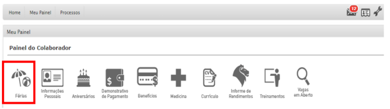
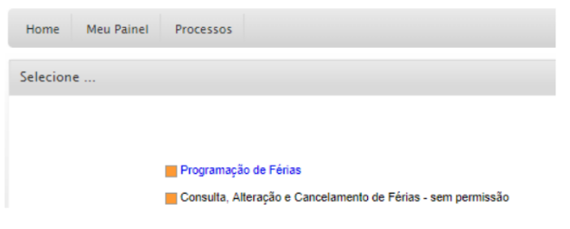
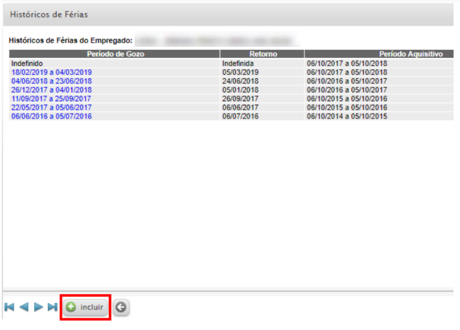
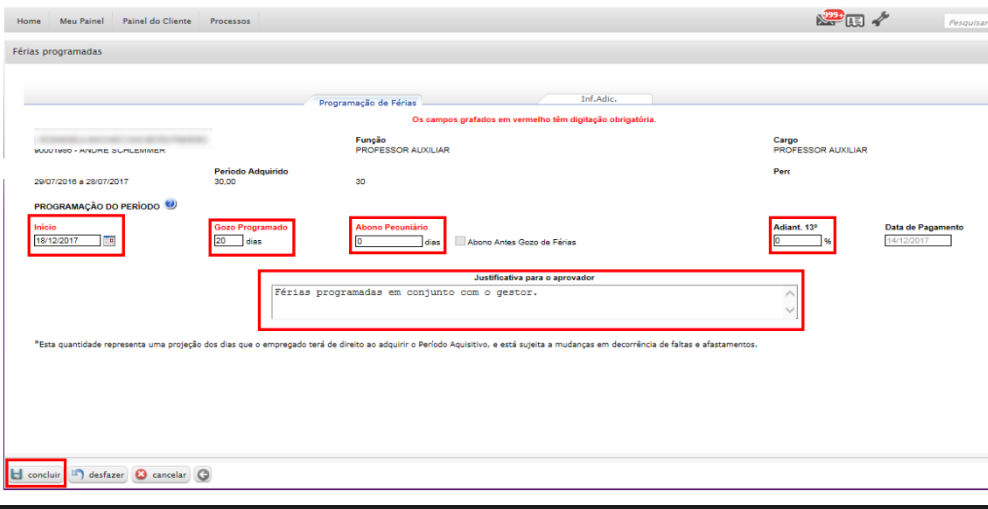
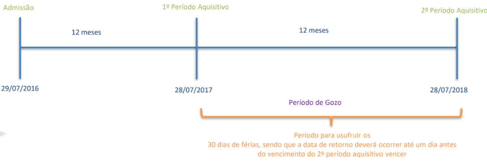

Para que não fique tão confuso, iremos por tópicos, e eles serão:
° Responsabilidades e Documentos
° Lançamento de Férias
° Perguntas frequentes
- Primeiro, a solicitação das férias são feitas em etapas, assim como vou mostrar.
Solicitar férias via Portal ADP com no mínimo 45 dias - É a pessoa que está solicitando que executa essa etapa.
Aprovar solicitação de férias com no máximo 07 dias - E o gestor que executa essa etapa.
Emitir aviso de férias e pegar a assinatura do colaborador - A ADP ou o Gestor é quem executa essa etapa.
Rodar Férias do colaborador - É o Gestor que executa essa etapa.
Arquivar aviso de férias do colaborador na pasta - A(O) Focal é a pessoa que executa essa etapa.
Conferir cálculo das férias - A(O) Focal é a pessoa que se encarrega de executar essa etapa.
Realizar consulta de colaboradores com programação de férias - A(O) Focal é a pessoa que se encarrega da execução dessa etapa.
- O lançamento de férias de modo geral é executado pelo próprio colaborador como mostrado no tópico acima, o contribuidor emite suas férias para que o gestor possa aprovar, o contribuidor faz isso clicando no icone de férias abaixo.
- Após a execução dessa ação o contribuidor deve selecionar a opção "programação de férias" que será exibido após o clique.
- Após a execução desses dois passos, você deverá clicar no botão de incluir que estará no final da tela.
- E agora para o lançamento completo das férias é necessário completar alguns campos, e eles são:
Início - Aqui é onde deve ser colocado o dia que as férias do colaborador deverão ser iniciadas.
Gozo Programado - Nesse campo deverá ser posto a quantidade de dias que o colaborador irá estar em férias.
Adiant. 13º - Aqui é aonde o colaborador irá colocar se solicitará o seu décimo terceiro ou não, no caso se a resposta for sim, deve ser posto um 50, se for não o número é 0.
Justificativa Para o Aprovador - e nesse campo deverá conter a justificativa para a aprovação das férias.
- Após cumprir esses requisistos o colaborador deverá clicar no botão concluir para efetuar o lançamento de suas férias para o Gestor.
° Responsabilidades e Documentos
° Lançamento de Férias
° Perguntas frequentes
Responsabilidades e Documentos
- Primeiro, a solicitação das férias são feitas em etapas, assim como vou mostrar.
Solicitar férias via Portal ADP com no mínimo 45 dias - É a pessoa que está solicitando que executa essa etapa.
Aprovar solicitação de férias com no máximo 07 dias - E o gestor que executa essa etapa.
Emitir aviso de férias e pegar a assinatura do colaborador - A ADP ou o Gestor é quem executa essa etapa.
Rodar Férias do colaborador - É o Gestor que executa essa etapa.
Arquivar aviso de férias do colaborador na pasta - A(O) Focal é a pessoa que executa essa etapa.
Conferir cálculo das férias - A(O) Focal é a pessoa que se encarrega de executar essa etapa.
Realizar consulta de colaboradores com programação de férias - A(O) Focal é a pessoa que se encarrega da execução dessa etapa.
Lançamento de Férias
- O lançamento de férias de modo geral é executado pelo próprio colaborador como mostrado no tópico acima, o contribuidor emite suas férias para que o gestor possa aprovar, o contribuidor faz isso clicando no icone de férias abaixo.

- Após a execução dessa ação o contribuidor deve selecionar a opção "programação de férias" que será exibido após o clique.

- Após a execução desses dois passos, você deverá clicar no botão de incluir que estará no final da tela.

- E agora para o lançamento completo das férias é necessário completar alguns campos, e eles são:
Início - Aqui é onde deve ser colocado o dia que as férias do colaborador deverão ser iniciadas.
Gozo Programado - Nesse campo deverá ser posto a quantidade de dias que o colaborador irá estar em férias.
Adiant. 13º - Aqui é aonde o colaborador irá colocar se solicitará o seu décimo terceiro ou não, no caso se a resposta for sim, deve ser posto um 50, se for não o número é 0.
Justificativa Para o Aprovador - e nesse campo deverá conter a justificativa para a aprovação das férias.
- Após cumprir esses requisistos o colaborador deverá clicar no botão concluir para efetuar o lançamento de suas férias para o Gestor.

Perguntas Frequentes
Eu posso sair de férias a qualquer momento?
Não, antes de efetuar a sua programação de férias, as mesmas precisam estar alinhadas com o seu gestor imediato e a programação deve ocorrer, com no mínimo, 45 dias de antecedência das suas férias.Quem é responsável pela programação das férias?
A programação das férias no sistema ADP é de responsabilidade do colaborador, pois todos os colaboradores do Grupo Marista possuem acesso ao painel de colaborador para efetuar o lançamento de suas férias.Qual período para início do gozo de férias?
A recomendação do Grupo Marista é que as férias iniciem preferencialmente às segundas-feiras, desde que não seja um feriado. Também não é permitido que as férias iniciem dois dias antes do descanso semanal remunerado, pois está previsto em lei.Qual o prazo para aprovação meu gestor possui para aprovar meu pedido de férias?
O prazo para aprovação é de 7 dias corridos, caso não ocorra dentro deste prazo, a requisição é cancelada automaticamente pelo sistema e será necessário realizar um novo lançamento no sistema.Quando ocorre o pagamento das minhas férias?
O pagamento dos valores das férias ocorrerá dois dias úteis antes do inicio das férias, isto é, na quinta-feira anterior à saída das férias.Posso programar minhas férias sem elas estarem vencidas?
Não é permitido antecipação de férias sem estar vencida, salvo em caso de férias coletivas quando todos os colaboradores do mesmo setor saem de férias pelo mesmo período de diasEu posso fracionar minhas férias?
Sim, desde que você alinhe com o seu gestor antes. Poderá ser fracionado as férias da seguinte maneira: 20 dias + 10 dias, 10 dias + 20 dias ou 15 dias + 15 dias. Não é recomendado o abono pecuniário (a venda de dias). É importante se atentar para que a diferença dos dias sejam retirados antes do vencimento do 2o período vencer.Se meu gestor perder o prazo para aprovação, como que fica a programação das minhas férias?
A requisição é cancelada automaticamente pelo sistema e deverá ser programado no sistema ADP novamente, respeitando o prazo de 45 dias de antecedência da saída de férias do colaborador.Se eu tiver faltas injustificadas ao longo do ano, terei algum prejuízo nas minhas férias?
Sim, caso você possua faltas injustificadas poderá sofrer perda dos dias de férias, veja o quadro abaixo: Até – injustificadas Direito a Férias Até 5 – faltas 30 De 6 a 14 – faltas 24 De 15 a 23 – faltas 18 De 24 a 32 – faltas 12 Acima de 32 – faltas 00Meu gestor pode cancelar minhas férias?
Sim, é possível realizar o cancelamento das férias em até 15 dias corridos antes do início do gozo. Posso solicitar a antecipação da primeira parcela do 13° salário? Sim, no momento da programação das suas férias é possível solicitar o adiantamento da primeira parcela do 13o salário. Período Aquisitivo - Como eu sei que se tenho direito a usufruir das minhas férias?
